%matplotlib inline
import sys # system information
import matplotlib # plotting
import scipy # scientific computing
import pandas as pd # data managing
from scipy.special import comb
from scipy import stats as st
from scipy.special import gamma
from scipy.special import comb
import numpy as np
import matplotlib.pyplot as plt
# Matplotlib setting
plt.rcParams['text.usetex'] = True
matplotlib.rcParams['figure.dpi']= 3006 Homework 2
6.1 Homework Description
Read Chapter 3 in the Hoff book.
Then, do the following exercises in Hoff: 3.1, 3.3, 3.4, 3.7, 3.12.
For problems that require a computer, please do and derive as much as possible “on paper,” and include these derivations in your submission file. Then, for the parts that do require the use of a computer (e.g., creating plots), you are free to use any software (R, Python, …) of your choosing; no need to include your code in your write-up. Please make sure you create a single file for submission here on Canvas.
For computations involving gamma functions (e.g., 3.7), it is often helpful to work with log-gamma functions instead, to avoid numbers that are too large to be represented by a computer. In R, the functions lbeta() and lgamma() compute the (natural) log of the beta and gamma functions, respectively. See more here: https://stat.ethz.ch/R-manual/R-devel/library/base/html/Special.html
- PDF version
- Deadline:
Sep 20 by 12:01pm
6.2 Computational Enviromnent Setup
6.2.1 Third-party libraries
6.2.2 Version
print(sys.version)
print(matplotlib.__version__)
print(scipy.__version__)
print(np.__version__)
print(pd.__version__)3.9.12 (main, Apr 5 2022, 01:52:34)
[Clang 12.0.0 ]
3.6.2
1.9.3
1.23.4
1.5.16.3 Problem 3.1
Sample survey: Suppose we are going to sample 100 individuals from a county (of size much larger than 100) and ask each sampled person whether they support policy \(Z\) or not. Let \(Y_i = 1\) if person \(i\) in the sample supports the policy, and \(Y_i = 0\) otherwise.
6.3.1 (a)
Assume \(Y_1,\dots, Y_{100}\) are, conditional on \(\theta\), i.i.d. binary random variables with expectation \(\theta\). Write down the joint distribution of \(Pr(Y_1 =y1,\dots, Y_{100} = y_{100}|\theta)\) in a compact form. Also write down the form of \(Pr(\sum Y_i = y|\theta)\).
\[Pr(Y_1 = y_1,\dots, Y_{100}=y_{100}|\theta) = \underline{\theta^{\sum_{u=1}^{100}}(1-\theta)^{100-\sum_{u=1}^{100}}}\]
\[Pr(\sum_{i=1}^{100} Y_i = y |\theta)= \underline{{100 \choose y}\theta^{y}(1-\theta)^{100-y}} \tag{6.1}\]
6.3.2 (b)
For the moment, suppose you believed that \(\theta\in\{0.0,0.1,\dots,0.9,1.0\}\). Given that the results of the survey were \(\sum^{100}_{i=1} Y_i = 57\), compute \(Pr(\sum Y_{i} = 57|\theta)\) for each of these 11 values of \(\theta\) and plot these probabilities as a function of \(\theta\)
From Equation 6.1, the sum of supports (\(y\)) is on the power term. Thus, directly computation is problematic with limited range of floating number. Converting probability to log scale is a way to bypass this problem.Another way is to use scipy.stats.binom function1
The distribution of \(Pr(\sum_{i=1}^{100} Y_i = y |\theta)\) along with \(\theta\in\{0.0,0.1,\dots,0.9,1.0\}\) is shown in Table 6.1. The plot of distribution is shown in Figure 6.1.
thetas = np.linspace(0.0,1.0,11)
tot = 100
probs = np.zeros(len(thetas))
count = 57
for (i, theta) in enumerate(thetas):
probs[i] = st.binom.pmf(count, tot, theta)
# list of probabilities
pd.DataFrame({"Theta": thetas, "posteriori": probs})| Theta | posteriori | |
|---|---|---|
| 0 | 0.0 | 0.000000e+00 |
| 1 | 0.1 | 4.107157e-31 |
| 2 | 0.2 | 3.738459e-16 |
| 3 | 0.3 | 1.306895e-08 |
| 4 | 0.4 | 2.285792e-04 |
| 5 | 0.5 | 3.006864e-02 |
| 6 | 0.6 | 6.672895e-02 |
| 7 | 0.7 | 1.853172e-03 |
| 8 | 0.8 | 1.003535e-07 |
| 9 | 0.9 | 9.395858e-18 |
| 10 | 1.0 | 0.000000e+00 |
plt.plot(thetas, probs, 'ko');
plt.xlabel(r"$\theta$");
plt.ylabel(r"$Pr(\sum Y_i = 57 |\theta)$");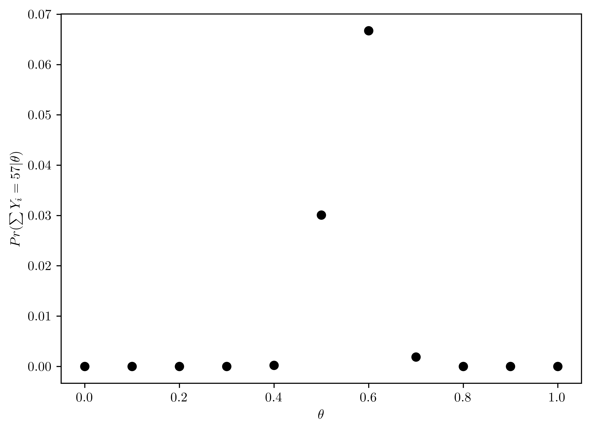
6.3.3 (c)
Now suppose you originally had no prior information to believe one of these \(\theta\)-values over another, and so \(Pr(\theta=0.0)=Pr(\theta=0.1)=\dots=Pr(\theta=0.9)=Pr(\theta=1.0)\). Use Bayes’ rule to compute \(p(\theta|\sum^{n}_{i=1} Y_i = 57)\) for each \(\theta\)-value. Make a plot of this posterior distribtution as a function of \(\theta\).
\[\begin{align} p(\theta_i |\sum^{n}_{i=1} Y_i = 57) &= \frac{p(\sum^{n}_{i=1} Y_i = 57|\theta)p(\theta_i)}{p(\sum^{n}_{i=1} Y_i = 57)}\\ &= \frac{p(\sum^{n}_{i=1} Y_i = 57|\theta)p(\theta_i)}{\sum_{\theta\in\Theta}p(\sum^{n}_{i=1} Y_i = 57 | \theta)p(\theta)} \end{align}\]
The following is the calculation of the posterior distribution (shown in Table 6.2), and the result is shown in Figure 6.2.
p_theta = 1.0/len(thetas)
p_y = np.sum( probs*p_theta)
post_theta = np.zeros(len(thetas))
for (i, theta) in enumerate(thetas):
post_theta[i] = probs[i]*p_theta/p_y
# list of probabilities
pd.DataFrame({"Theta": thetas, "posteriori":post_theta})| Theta | posteriori | |
|---|---|---|
| 0 | 0.0 | 0.000000e+00 |
| 1 | 0.1 | 4.153701e-30 |
| 2 | 0.2 | 3.780824e-15 |
| 3 | 0.3 | 1.321705e-07 |
| 4 | 0.4 | 2.311695e-03 |
| 5 | 0.5 | 3.040939e-01 |
| 6 | 0.6 | 6.748515e-01 |
| 7 | 0.7 | 1.874172e-02 |
| 8 | 0.8 | 1.014907e-06 |
| 9 | 0.9 | 9.502335e-17 |
| 10 | 1.0 | 0.000000e+00 |
plt.plot(thetas, post_theta, 'ko');
plt.xlabel(r"$\theta$");
plt.ylabel(r"$p(\theta_i |\sum^{n}_{i=1} Y_i = 57)$");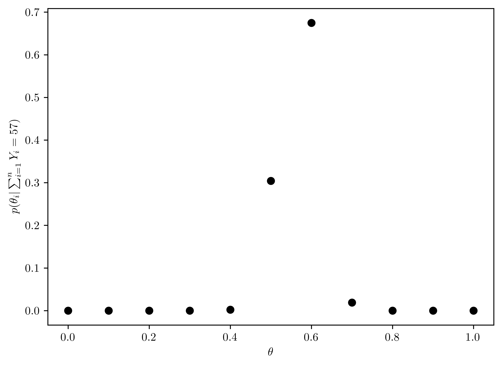
6.3.4 (d)
Now suppose you allow \(\theta\) to be any value in the interval \([0,1]\). Using the uniform prior density for \(\theta\), so that \(p(\theta) = 1\), plot the posterior density \(p(\theta) \times Pr(\sum^{n}_{i=1} Y_i = 57 |\theta)\) as a function of \(\theta\).
As shown in Figure 6.3.
thetas = np.linspace(0,1, 1000)
p_theta = 1.0/len(thetas)
probs = np.zeros(len(thetas))
post_theta = np.zeros(len(thetas))
count = 57
for (i, theta) in enumerate(thetas):
probs[i] = st.binom.pmf(count, tot, theta)
post_theta[i] = probs[i]
# Plotting
plt.plot(thetas, post_theta, 'k-');
plt.xlabel(r"$\theta$");
plt.ylabel(r"$p(\theta_i |\sum^{n}_{i=1} Y_i = 57)$");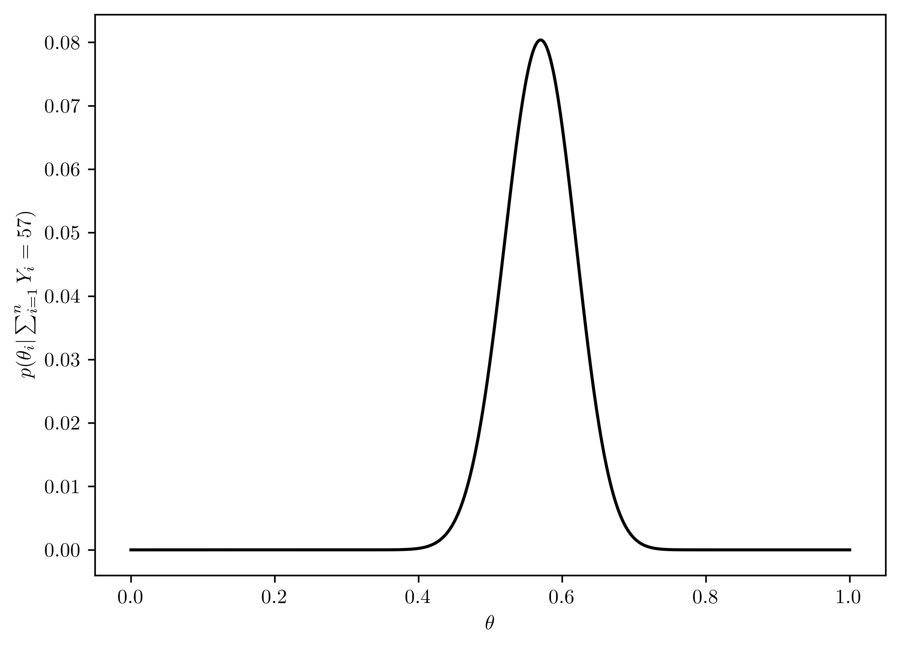
6.3.5 (e)
As discussed in this chapter, the posterior distribution of \(\theta\) is \(beta(1+57, 1+100-57)\). Plot the posterior density as a function of \(\theta\). Discuss the relationships among all of the plots you have made for this exercise.
The \(\theta\) with beta distribution is plotted in Figure 6.4.
Figure 6.2 is the normalized probability via Bayes’ rule (Section 6.3.3). On the other hand, Figure 6.1 is not normalized.
Figure 6.3 and Figure 6.4 has similar distribution, which means the prior \(\theta\) has little influcence on the posterior distribution. This is because the sample number is large (\(n=57\)), and decrease the importance of the prior.
grid = np.linspace(0,1, 3000)
thetas_rv = st.beta(1+57, 1+100-57)
thetas = [thetas_rv.pdf(x) for x in grid]
p_theta = 1.0/len(thetas)
probs = np.zeros(len(thetas))
post_theta = np.zeros(len(thetas))
count = 57
for (i, theta) in enumerate(thetas):
probs[i] = st.binom.pmf(count, tot, theta)
post_theta[i] = probs[i]
# Plotting
plt.plot(thetas, post_theta, 'k-');
plt.xlabel(r"$\theta\sim beta$");
plt.ylabel(r"$p(\theta_i |\sum^{n}_{i=1} Y_i = 57)$");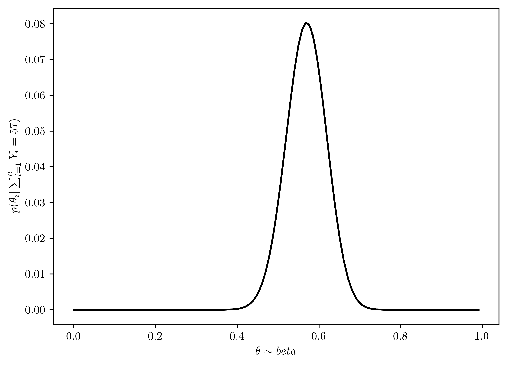
6.4 Problem 3.3
Tumor counts: A cancer laboratory is estimating the rate of tumorigenesis in two strains of mice, A and B. They have tumor count data for 10 mice in strain A and 13 mice in strain B. Type A mice have been well studied, and information from other laboratories suggests that type A mice have tumor counts that are approximately Poisson-distributed with a mean of 12. Tumor count rates for type B mice are unknown, but type B mice are related to type A mice. The observed tumor counts for the two populations are \[\mathcal{y}_{A} = (12, 9, 12, 14, 13, 13, 15, 8, 15, 6);\] \[\mathcal{y}_{B} = (11, 11, 10, 9, 9, 8, 7, 10, 6, 8, 8, 9, 7).\]
6.4.1 (a)
Find the posterior distributions, means, variances and \(95\%\) quantile-based confidence intervals for \(\theta_A\) and \(\theta_B\), assuming a Poisson sampling distribution for each group and the following prior distribution: \(\theta_A \sim gamma(120,10), \theta_B \sim gamma(12,1), p(\theta_A, \theta_B) = p(\theta_A) \times p(\theta_B)\)
According to Hoff (2009, 580:46–47),
\[E[\theta_{*} | y_1,\dots, y_{n_{*}}] = \frac{a_* + \sum_{i=1}^{n_*} y_{i}}{b_* + n_*}\]
where \(*\in \{A, B\}\). Given
\(\begin{cases} \theta_{*} &\sim gamma(a_*,b_*)\\ Y_1,\dots, Y_{n_*}|\theta_{*} &\sim Poisson(\theta_{*}) \end{cases}\)
\[\Rightarrow\{\theta_{i}|Y_1,\dots,Y_{n_*}\}\sim gamma(a + \sum^{n_*}_{i=1} Y_i, b_* + n_*) \tag{6.2}\]
The properties of Gamma distribution (Hoff 2009, 580:45–46),
\[p(\theta) = \frac{b^a}{\Gamma(a)}\theta^{a-1}e^{-b\theta}, \quad \theta,a,b > 0\]
\[E[\theta] = \frac{a}{b} \tag{6.3}\] \[Var[\theta] = \frac{a}{b^2} \tag{6.4}\]
Type A Mice
| Parameter | Value |
|---|---|
| \(a_A\) | 120 |
| \(b_A\) | 10 |
| \(n_A\) | 10 |
| \(\sum_{i=1}^{n_{A}y_{i}}\) | \(12+9+12+14+13+13+15+8+15+6=117\) |
The posterior distribution of mice A:
\[\{\theta_A|Y_1,\dots,Y_{n_A} \sim gamma(120 + 117, 10+10)= gamma(237,20)\} \]
\(E[\theta_{A}|\sum_{i=1}^{n_{A}} Y_{i}] = \frac{237}{20}= \underline{11.85}\)
\(Var[\theta_{A}|\sum_{i=1}^{n_{A}} Y_{i}] = \frac{237}{20^2}\approx \underline{0.59}\)
\(95\%\) quantile-based confidence intervals is shown in Table 6.4
def interval_gamma_95(a,b):
rvA = st.gamma(a, scale=1/b)
ints = rvA.interval(0.95)
return pd.DataFrame({"Left bound":[ints[0]], "Right bound":[ints[1]]})
aA = 237
bA = 20
interval_gamma_95(aA,bA)| Left bound | Right bound | |
|---|---|---|
| 0 | 10.389238 | 13.405448 |
Type B Mice
similarly,
| Parameter | Value |
|---|---|
| \(a_B\) | 12 |
| \(b_B\) | 1 |
| \(n_B\) | 13 |
| \(\sum_{i=1}^{n_{B}y_{i}}\) | \(11+11+10+9+9+8+7+10+6+8+8+9+7=113\) |
The posterior distribution of mice B:
\[\{\theta_B|Y_1,\dots,Y_{n_B} \sim gamma(12+113, 1+13)= gamma(125, 14)\} \]
- \(E[\theta_{B}|\sum_{i=1}^{n_{B}} Y_{i}] = \frac{125}{14} \approx \underline{8.93}\)
- \(Var[\theta_{B}|\sum_{i=1}^{n_{B}} Y_{i}] = \frac{125}{14^2}\approx \underline{0.64}\)
- \(95\%\) quantile-based confidence intervals is shown in Table 6.6
aB = 125
bB = 14
interval_gamma_95(aB,bB)| Left bound | Right bound | |
|---|---|---|
| 0 | 7.432064 | 10.560308 |
6.4.2 (b)
Computing and plot the posterior expectation of \(\theta_B\) under the prior distribution \(\theta_B \sim gamma(12\times n_0, n_0)\) for each value of \(n_0\in \{1,2,\dots, 50\}\). Descirbe what sort of prior beliefs about \(\theta_B\) to be close to that of \(\theta_A\).
The posterior distribution can be derived from Equation 6.2. As shown in Figure 6.5, the mean value of \(\theta_B\) with \(n_0\) close to \(50\) is necessary to have the similar posterior mean as \(\theta_A\).
def post_gamma(a,b, sumY, n):
return st.gamma(a+sumY, scale=1/(b + n))
n0s = np.arange(1, 50, 1)
sumYB = 11+11+10+9+9+8+7+10+6+8+8+9+7
nB = 13
post_theta_rvBs = [post_gamma(12*n0, n0, sumYB, nB) for n0 in n0s]
meanBs = [post_theta_rvBs[i].mean() for i in range(0, len(n0s))]
# Plotting
plt.plot(n0s, meanBs, "ko")
plt.xlabel("$n_0$")
plt.ylabel("$E[Pr(\\theta_{B}|y_{B})]$");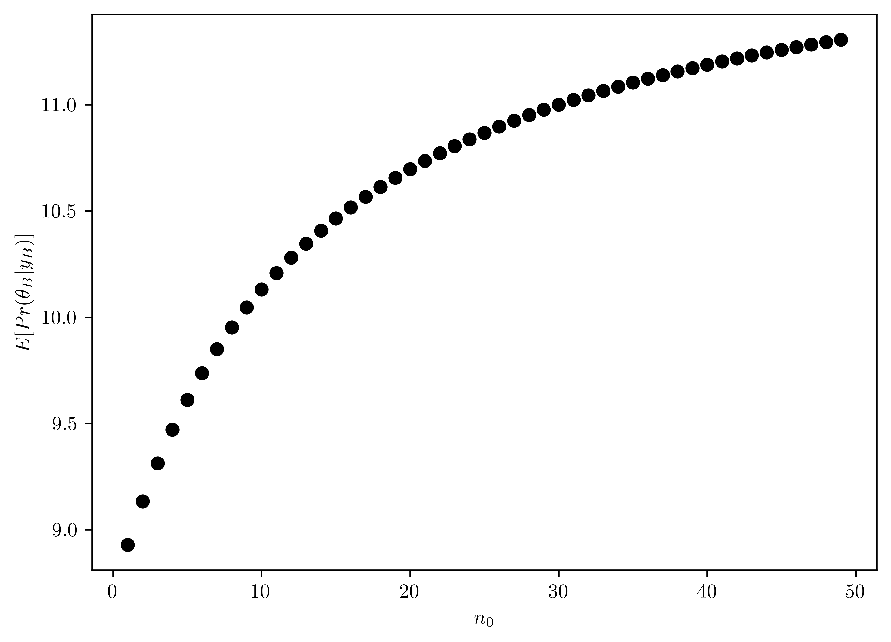
6.4.3 (c)
Should knowledge about population \(A\) tell us anything about population \(B\)? Discuss whether or not it makes sense to have \(p(\theta_A,\theta_B)=p(\theta_A)\times p(\theta_B)\).
The understanding of mice \(A\) is well known. Though mice \(B\) is related to mice \(A\), there is possibility that mice \(B\) is different from the distribution of \(A\). Thus, viewing mice \(A\) and mice \(B\) with independent prior distribution makes sense.
6.5 Problem 3.4
Mixtures of beta priors: Estimate the probability \(\theta\) of teen recidivism based on a study in which there were \(n=43\) individuals released from incarceration and \(y=15\) re-offenders within \(36\) months.
6.5.1 (a)
Using a \(beta(2,8)\) prior for \(\theta\), plot \(p(\theta)\), \(p(y|\theta)\) and \(p(\theta|y)\) as functions of \(\theta\). Find the posterior mean, mode, and standard deviation of \(\theta\). Find a \(95\%\) quantile-based condifence interval.
- \(p(\theta) \sim beta(2,8)\)
- Plotted in Figure 6.6
According to Hoff (2009) pp. 37-38, the conjugate posterior (\(\{\theta|Y=y\}\)) given beta as prior is a beta distribution, and \(Y\sim binomial(n,\theta)\)
- \(p(y|\theta) = {n\choose y}\theta^{y}(1-\theta)^{(n-y)}\)
- Plotted in Figure 6.7
- \(p(\theta | y) \sim beta(a+y, b + n-y) = beta(2+15, 8 + 43 - 15) = beta(17, 36)\)
- Plotted in Figure 6.8
- \(E[p(\theta | y)] = \frac{a}{a+b} = \frac{17}{17+36} \approx 0.32\)
- \(Mode(p(\theta | y)) = \frac{a-1}{a+b-2} \approx 0.31\)
- \(std(p(\theta | y)) = \sqrt{var[p(\theta | y)]} = \sqrt{\frac{ab}{(a+b)^2 (a+b+1)}} = \sqrt{\frac{17\times 36}{(17+36)^2 (17+36+1)}}\approx 0.06\)
- Properties are shown in Table 6.7.
thetas = np.linspace(0,1,1000)
rv_theta = st.beta(2,8)
# Plotting
plt.plot(thetas, rv_theta.pdf(thetas), 'k-')
plt.xlabel("$\\theta$");
plt.ylabel("$Pr(\\theta)$");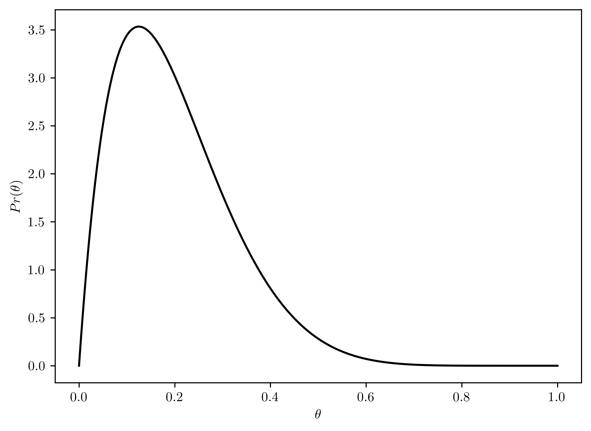
thetas = np.linspace(0,1,1000)
n = 43
y = 15
pr_like = [st.binom.pmf(y, n, theta) for theta in thetas]
# Plotting
plt.plot(thetas, pr_like, 'k-')
plt.xlabel("$\\theta$");
plt.ylabel("$Pr(y|\\theta)$");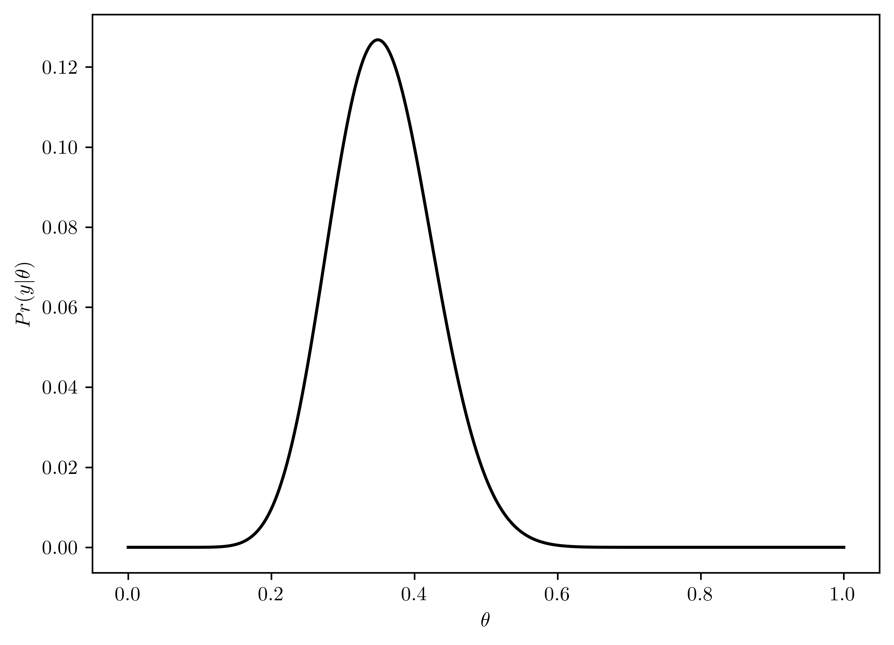
thetas = np.linspace(0,1,1000)
rv_theta = st.beta(2+15, 8 + 43 - 15)
# Plotting
plt.plot(thetas, rv_theta.pdf(thetas), 'k-')
plt.xlabel("$\\theta$");
plt.ylabel("$Pr(\\theta | y)$");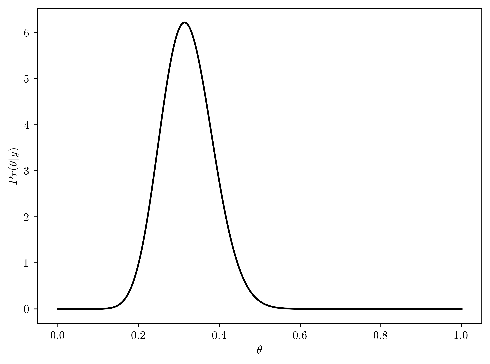
ints = rv_theta.interval(0.95)
pd.DataFrame({"Properties": ["Left bound (CI)", "Right bound (CI)", "mean", "mode", "standard deviation"], "Values": [ints[0], ints[1], rv_theta.mean(), (17-1)/(17+36-2), rv_theta.std()]})| Properties | Values | |
|---|---|---|
| 0 | Left bound (CI) | 0.203298 |
| 1 | Right bound (CI) | 0.451024 |
| 2 | mean | 0.320755 |
| 3 | mode | 0.313725 |
| 4 | standard deviation | 0.063519 |
6.5.2 (b)
Repeat (a), but using a \(beta(8,2)\) prior for \(\theta\).
- \(p(\theta) \sim beta(8,2)\)
- Plotted in Figure 6.9
- \(p(y|\theta) = {n\choose y}\theta^{y}(1-\theta)^{(n-y)}\)
- Plotted in Figure 6.10
- \(p(\theta | y) \sim beta(a+y, b + n-y) = beta(8+15, 2 + 43 - 15) = beta(23, 30)\)
- Plotted in Figure 6.11
- \(E[p(\theta | y)] = \frac{a}{a+b} = \frac{23}{23+30} \approx 0.434\)
- \(Mode(p(\theta | y)) = \frac{a-1}{a+b-2} \approx 0.431\)
- \(std(p(\theta | y)) = \sqrt{var[p(\theta | y)]} = \sqrt{\frac{ab}{(a+b)^2 (a+b+1)}} = \sqrt{\frac{23\times 30}{(23+30)^2 (23+30+1)}}\approx 0.07\)
- Properties are shown in Table 6.8.
thetas = np.linspace(0,1,1000)
rv_theta = st.beta(8,2)
# Plotting
plt.plot(thetas, rv_theta.pdf(thetas), 'k-')
plt.xlabel("$\\theta$");
plt.ylabel("$Pr(\\theta)$");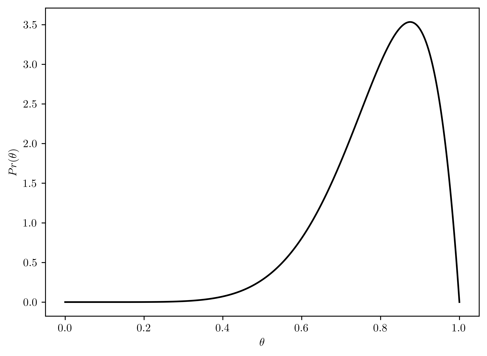
thetas = np.linspace(0,1,1000)
n = 43
y = 15
pr_like = [st.binom.pmf(y, n, theta) for theta in thetas]
# Plotting
plt.plot(thetas, pr_like, 'k-')
plt.xlabel("$\\theta$");
plt.ylabel("$Pr(y|\\theta)$");thetas = np.linspace(0,1,1000)
rv_theta = st.beta(8+15, 2 + 43 - 15)
# Plotting
plt.plot(thetas, rv_theta.pdf(thetas), 'k-')
plt.xlabel("$\\theta$");
plt.ylabel("$Pr(\\theta | y)$");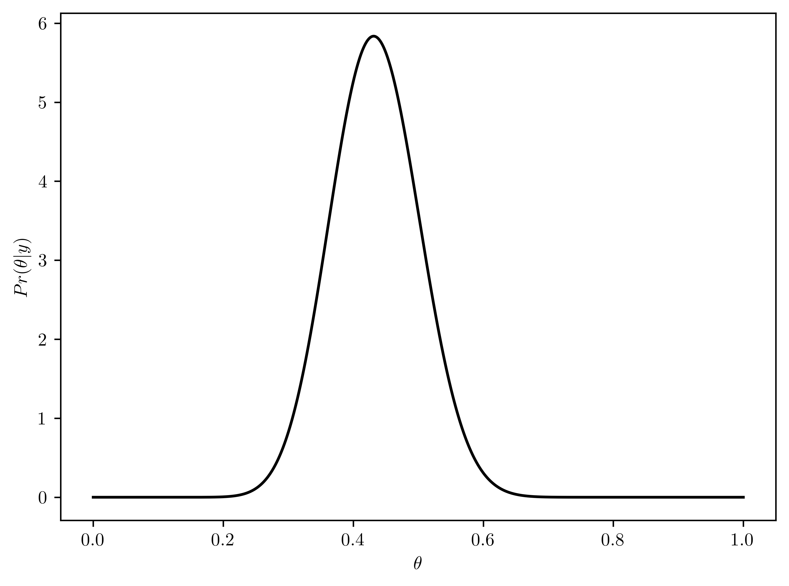
ints = rv_theta.interval(0.95)
pd.DataFrame({"Properties": ["Left bound (CI)", "Right bound (CI)", "mean", "mode", "standard deviation"], "Values": [ints[0], ints[1], rv_theta.mean(), (23-1)/(23+30-2), rv_theta.std()]})| Properties | Values | |
|---|---|---|
| 0 | Left bound (CI) | 0.304696 |
| 1 | Right bound (CI) | 0.567953 |
| 2 | mean | 0.433962 |
| 3 | mode | 0.431373 |
| 4 | standard deviation | 0.067445 |
6.5.3 (c)
Consider the following prior distribution for \(\theta\): \[p(\theta) = \frac{1}{4}\frac{\Gamma(10)}{\Gamma(2)\Gamma(8)}[3\theta(1-\theta)^7+\theta^7(1-\theta)]\] which is a \(75-25\%\) mixture of a \(beta(2,8)\) and a \(beta(8,2)\) prior distribution. Plot this prior distribution and compare it to the priors in (a) and (b). Describe what sort of prior opinion this may represent.
The mixture of beta distribution is plotted in Figure 6.12. This opinion merges two opposite suggestions with different weights:
- \(\theta\) is low (Figure 6.6).
- \(\theta\) is high (Figure 6.9).
def mixBeta(th):
return 0.25*gamma(10)/(gamma(2)*gamma(8))*( 3*th*((1-th)**7) + (th**7)*(1-th) )
thetas = np.linspace(0,1, 1000)
prs = [mixBeta(theta) for theta in thetas]
# Plotting
plt.plot(thetas, prs, "k-")
plt.xlabel("$\\theta$")
plt.ylabel("$p(\\theta)$");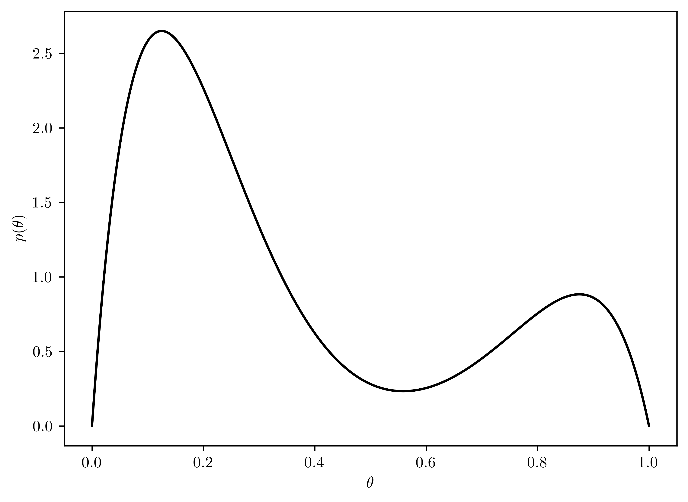
6.5.4 (d)
For the prior in (c):
Write out mathematically \(p(\theta)\times p(y|\theta)\) and simplify as much as possible.
The posterior distribution is a mixture of two distributions you know. Identify these distributions.
On a computer, calculate and plot \(p(\theta) \times p(y|\theta)\) for a variety of \(\theta\) values. Also find (approximately) the posterior mode, and discuss its relation to the modes in (a) and (b).
Part 1.
Noted that \({43 \choose 15} = \frac{43!}{15!28!}=\frac{\Gamma(44)}{\Gamma(16)\Gamma(29)}\)
\[\begin{align} p(\theta)\times p(y|\theta) &= \frac{1}{4}\frac{\Gamma(10)}{\Gamma(2)\Gamma(8)}[3\theta(1-\theta)^7+\theta^7(1-\theta)] \times {43\choose 15}\theta^{15}(1-\theta)^{(43-15)}\\ &= \frac{1}{4}\frac{\Gamma(10)}{\Gamma(2)\Gamma(8)}\underbrace{{43 \choose 15}}_{\frac{\Gamma(44)}{\Gamma(16)\Gamma(29)}}(\theta^{22}(1-\theta)^{29} + 3\theta^{16}(1-\theta)^{35})\\ &= \frac{1}{4}\frac{\Gamma(10)}{\Gamma(2)\Gamma(8)}\frac{\Gamma(44)}{\Gamma(16)\Gamma(29)}(\underline{\theta^{22}(1-\theta)^{29}} + \underline{3\theta^{16}(1-\theta)^{35}})\\ \end{align}\]
The simplification is by the aid of walfram-alpha2.
Part 2.
The distribution is the mixture of \(Beta(23,30)\) and \(Beta(17,36)\) with certain weights.
Part 3.
- The mode of \(p(\theta) \times p(y|\theta)\) is \(0.314\) (See Figure 6.13).
- The mode in (a): \(0.313725\)
- The mode in (b): \(0.431373\)
Thus, the posterior distribution has the mode between \(Beta(2,8)\) ((a)) and \(Beta(8,2)\)((b)), and more close to \(Beta(2.8)\)
def mixture_post(th):
scale = 0.25 * gamma(10)/(gamma(2)*gamma(8)) * gamma(44)/(gamma(16)*gamma(29))
beta = (th**22)*(1-th)**29 + 3*(th**16)*(1-th)**35
return scale*beta
prs = [mixture_post(theta) for theta in thetas]
maxTh = thetas[np.argmax(prs)]
plt.plot(thetas, prs, 'k-')
plt.xlabel("$\\theta$")
plt.ylabel("$p(\\theta)\\times p(y|\\theta)$");
plt.axvline(x=maxTh, linestyle='--', color='k', label= "Mode={}".format(maxTh));
plt.legend();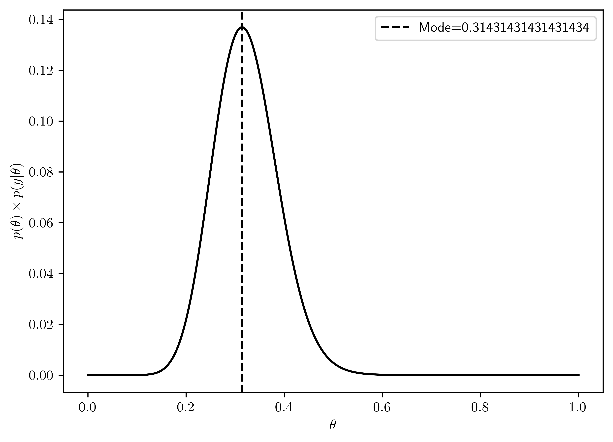
6.5.5 (e)
Find a general formula for the weights of the mixture distribution in (d) 2., and provide an interpretation for their values.
Let \(c_1 = \frac{1}{4}\frac{\Gamma(10)}{\Gamma(2)\Gamma(8)}\frac{\Gamma(44)}{\Gamma(16)\Gamma(29)}\)
\[\begin{align} p(\theta)\times p(y|\theta) &= \frac{1}{4}\frac{\Gamma(10)}{\Gamma(2)\Gamma(8)}\frac{\Gamma(44)}{\Gamma(16)\Gamma(29)}(\underline{\theta^{22}(1-\theta)^{29}} + \underline{3\theta^{16}(1-\theta)^{35}})\\ &= c_1 (\theta^{22}(1-\theta)^{29} + 3\theta^{16}(1-\theta)^{35})\\ &= c_1 \theta^{22}(1-\theta)^{29} + 3c_1 \theta^{16}(1-\theta)^{35})\\ &= c_1 \frac{\Gamma(23)\Gamma(30)}{\Gamma(53)} Beta(\theta, 23,30) + 3 c_1 \frac{\Gamma(17)\Gamma(36)}{\Gamma(51)} Beta(\theta, 17,36)\\ &= 0.0003 \times Beta(\theta, 23,30) + 58.16 \times Beta(\theta, 17,36)\\ &= \omega_1 \cdot Beta(\theta, 23,30) + \omega_2 \cdot Beta(\theta, 17,36) \end{align}\]
That means \(Beta(17,36)\) is preferred to \(Beta(23,30)\). The updated posterior information is more close to the (a). That is because the mixture of priors has more weights (\(75\%\)) on the prior of \(Beta(2,8)\).
6.6 Problem 3.7
Posterior prediction: Consider a pilot study in which \(n_1 = 15\) children enrolled in special education classes were randomly selected and tested for a certain type of learning disability. In the pilot study, \(y_1 = 2\) children tested positive for the disability.
6.6.1 (a)
Using a uniform prior distribution, find the posterior distribution of \(\theta\), the fraction of students in special education classes who have the disability. Find the posterior mean, mode and standard deviation of \(\theta\), and plot the posterior density.
\[\theta \sim beta(1,1) (uniform)\] \[Y\sim binomial(n_1,\theta)\]
\[\begin{align} \theta|Y=y &\sim beta(1+y_1, 1+n_1 - y_1)\\ &= beta(1 + 2, 1+15-2)\\ &= beta(3, 14)\\ &= beta(a_p, b_p)\\ \end{align}\]
- The distribution is plotted in Figure 6.14
- \(E[\theta|Y] = \frac{a_p}{a_p+b_p} = \frac{3}{3+14} \approx 0.1764\)
- \(Mode[\theta|Y] = \frac{(a_p - 1)}{a_p - 1 + b_p - 1} = \frac{(3 - 1)}{3 - 1 + 14 - 1} \approx 0.1333\)
- \(Std[\theta|Y] = \sqrt{ \frac{a_p b_p}{(a_p+b_p+1)(a_p+b_p)^2} } = \sqrt{ \frac{3\cdot 14}{(3+14+1)(3+14)^2}} \approx 0.0899\)
thetas = np.linspace(0,1,1000)
pos = st.beta(3, 14)
pr_pos = [pos.pdf(theta) for theta in thetas]
plt.plot(thetas, pr_pos, "k-")
plt.xlabel("$\\theta$")
plt.ylabel("$Pr(\\theta|Y)$");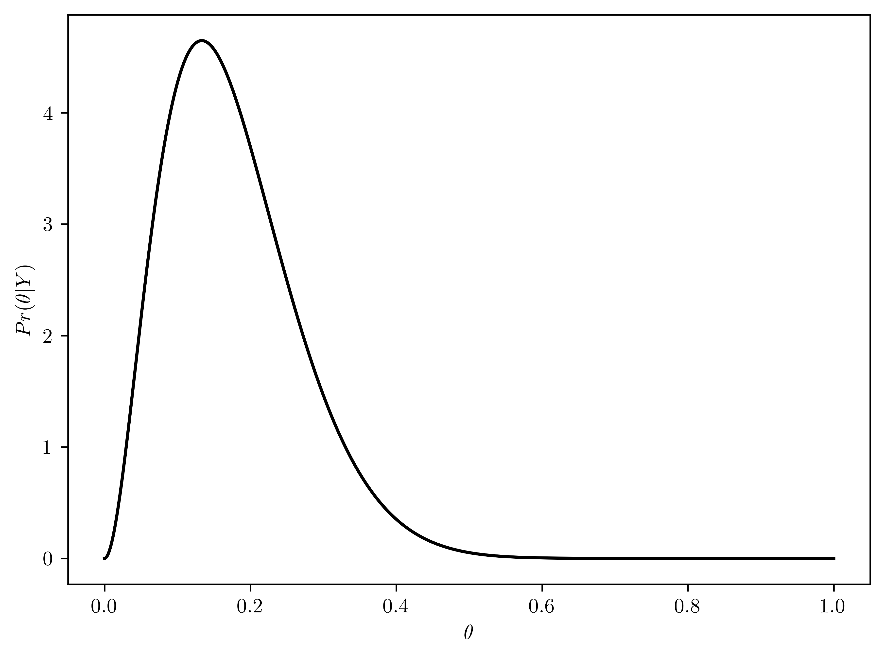
Researchers would like to recruit students with the disability to participate in a long-term study, but first they need to make sure they can recruit enough students. Let \(n_2 = 278\) be the number of children in special education classes in this particular school district, and let \(Y_2\) be the number of students with the disability.
6.6.2 (b)
Find \(Pr(Y_2=y_2|Y_1 =2)\), the posterior predictive distribution of \(Y_2\), as follows:
Discuss what assumptions are needed about the joint distribution of \((Y_1, Y_2)\) such that the fololowing is true: \[Pr(Y_2=y_2 |Y_1=2) = \int^{1}_{0} Pr(Y_2=y_2|\theta)p(\theta|Y_1=2)d\theta \tag{6.5}\]
Now plug in the forms of \(Pr(Y_2=y_2|\theta)\) and \(p(\theta|Y_1 =2)\) in the above integral.
Figure out what the above integral must be by using the calculus result discussed in Section 3.1.
Part 1
- The assumption is that \(Y_2\) is conditionally independent on \(Y_1\) over \(\theta\)
Thus,
\[\begin{align} \int^{1}_{0} Pr(Y_2=y_2|\theta)p(\theta|Y_1=2)d\theta &= \int^{1}_{0} Pr(Y_2=y_2)|\theta, Y_1=2)p(\theta |Y_1=2)d\theta\\ &= \int^{1}_{0} Pr(Y_2=y_2, \theta |Y_1 =2) d\theta\\ &= Pr(Y_2 = y_2 | Y_1=2) \end{align}\]
The equality of Equation 6.5 holds.
Part 2
\[\begin{align} Pr(Y_2=y_2 |Y_1=2) &= \int^{1}_{0} Pr(Y_2=y_2|\theta)p(\theta|Y_1=2)d\theta\\ &= \int^{1}_{0} binomial(y_2, n_2, \theta) beta(\theta, 3,14) d\theta\\ &= \int^{1}_{0} {n_2 \choose y_2}\theta^{y_2}(1-\theta)^{n_2-y_2} \frac{\Gamma(17)}{\Gamma(3)\Gamma(14)}\theta^{2}(1-\theta)^{13} d\theta\\ &= {n_2 \choose y_2}\frac{\Gamma(17)}{\Gamma(3)\Gamma(14)} \int^{1}_{0} \theta^{y_2}(1-\theta)^{n_2-y_2} \theta^{2}(1-\theta)^{13} d\theta\\&= {n_2 \choose y_2}\frac{\Gamma(17)}{\Gamma(3)\Gamma(14)} \int^{1}_{0} \theta^{(2+y_2)}(1-\theta)^{n_2 - y_2 +13} d\theta\\ &= {278\choose y_2}\frac{\Gamma(17)}{\Gamma(3)\Gamma(14)} \int^{1}_{0} \theta^{(2+y_2)}(1-\theta)^{278 - y_2 +13} d\theta\\ &= {278\choose y_2}\frac{\Gamma(17)}{\Gamma(3)\Gamma(14)} \int^{1}_{0} \theta^{(2+y_2)}(1-\theta)^{291 - y_2} d\theta\\ \end{align}\]
Part 3
Use the calculus trick:
\[\int^{1}_{0} \theta^{a-1}(1-\theta)^{b-1}d\theta = \frac{\Gamma(a)\Gamma(b)}{\Gamma(a+b)}\]
\[\begin{align} \int^{1}_{0} \theta^{(2+y_2)}(1-\theta)^{291 - y_2} d\theta &= \int^{1}_{0} \theta^{(3+y_2 - 1)}(1-\theta)^{292 - y_2 - 1} d\theta\\ &= \frac{\Gamma(3+y_2)\Gamma(292 - y_2)}{\Gamma(3+y_2 + 292 - y_2)}\\ &= \frac{\Gamma(3+y_2)\Gamma(292 - y_2)}{\Gamma(295)}\\ \end{align}\]
\(\therefore\) \[\begin{align} Pr(Y_2=y_2 |Y_1=2) &= {278\choose y_2}\frac{\Gamma(17)}{\Gamma(3)\Gamma(14)}\frac{\Gamma(3+y_2)\Gamma(292 - y_2)}{\Gamma(295)}\\ &= \frac{\Gamma(278)}{\Gamma(y_2)\Gamma(278-y_2)} \frac{\Gamma(17)}{\Gamma(3)\Gamma(14)}\frac{\Gamma(3+y_2)\Gamma(292 - y_2)}{\Gamma(295)}\\ &= \frac{\Gamma(3+y_2)}{\Gamma(y_2)}\frac{\Gamma(278)}{\Gamma(295)}\frac{\Gamma(292-y_2)}{\Gamma(278-y_2)} \frac{\Gamma(17)}{\Gamma(3)\Gamma(14)}\\ &= \prod^{3+y_2 -1}_{i=y_2} i \times \frac{1}{\prod^{295-1}_{i=278}i}\prod^{292-y_2 - 1}_{i=278-y_2}i \times 1680\\ &= \prod^{2+y_2}_{i=y_2} i \times \frac{1}{\prod^{294}_{i=278}i}\prod^{291-y_2}_{i=278-y_2}i \times 1680\\ \end{align}\]
6.6.3 (c)
Plot the function \(Pr(Y_2 = y_2 | Y_1 =2)\) as a function of \(y_2\). Obtain the mean and standard deviation of \(Y_2\), given \(Y_1 = 2\).
- The plot of \(Pr(Y_2 = y_2 | Y_1 =2)\) is in Figure 6.15.
- mean and standard deviation are displayed in Table 6.9.
def prod(a, b):
s = 1.0
for i in np.arange(a,b+1, 1.0):
s = s*i
return s
def pred_prob(y2, n2=278):
return prod(y2, 2+y2)*(1/prod(278, 294))*prod(278-y2, 291-y2)*1680
y2s = np.linspace(0, 278, 279)
prs = [pred_prob(y2) for y2 in y2s]
prs = prs/np.sum(prs)
plt.plot(y2s, prs, 'ko')
plt.xlabel("$y_{2}$")
plt.ylabel("$p(Y_2 | Y_1=2)$");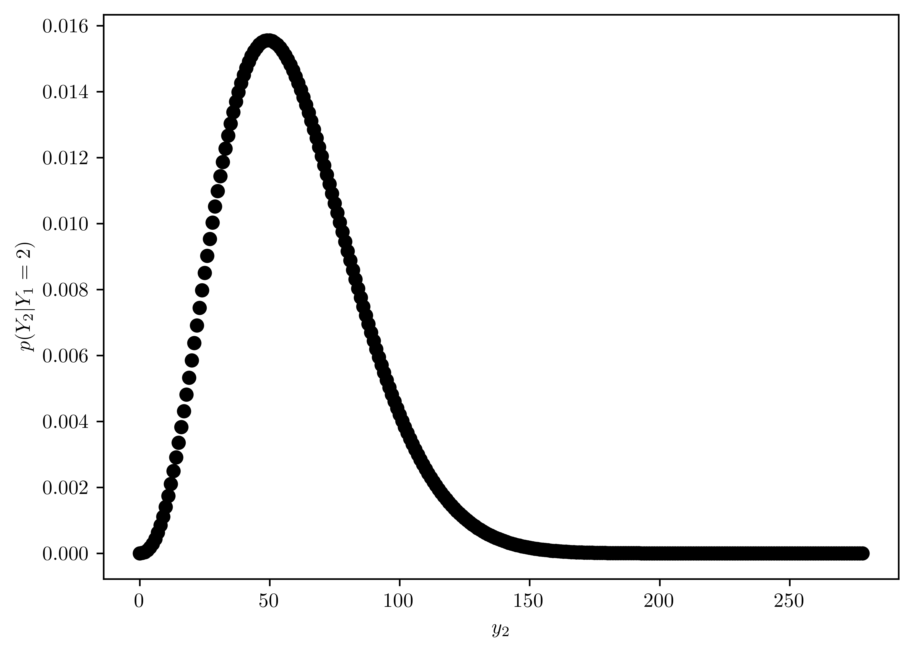
mean = np.sum(prs * y2s)/np.sum(prs)
std = np.sqrt(np.sum(y2s*y2s*prs) - (np.sum(y2s*prs))**2)
pd.DataFrame({"mean": [np.sum(prs * y2s)/np.sum(prs)], "std": [std]})| mean | std | |
|---|---|---|
| 0 | 59.105263 | 26.01193 |
6.6.4 (d)
The posterior mode and the MLE (maximum likelihood estimate) of \(\theta\), based on data from the pilot study, are both \(\hat{\theta} = \frac{2}{15}\). Plot the distribution \(Pr(Y_2 = y_2|\theta=\hat{\theta})\), and find the mean and standard deviation of \(Y_2\) given \(\theta=\hat{\theta}\). Compare these results to the plots and calculation in (c) and discuss any differences. Which distribution for \(Y_2\) would you used to make predictions, and why?
\[\begin{align} Pr(Y_2 = y_2 |\theta=\hat{\theta}) &= binomial(y_2, n_2, \hat{\theta})\\ \end{align}\]
The plot of \(Pr(Y_2 = y_2|\theta=\hat{\theta})\) distribution along with \(y_2\) is Figure 6.16.
Mean and standard deviation are shown in Table 6.10.
Compare to Figure 6.15, Figure 6.16 has less variation and less mean, which is more close to the original average of \(Y_1\) data (\(=\frac{2}{15}\)).
Figure 6.15 provides better prediction with MLE \(\theta\) because its properties is more related to the original average, and the likelihood is maximized with MLE method.
n2 = 278
th = 2/15
rv = st.binom(n2, th)
y2s = np.linspace(0,n2, n2+1)
prs = [rv.pmf(y2) for y2 in y2s]
plt.plot(y2s, prs, "ko")
plt.xlabel("$y_2$")
plt.ylabel("$Pr(Y_2 = y_2|\\theta=\\hat{\\theta})$");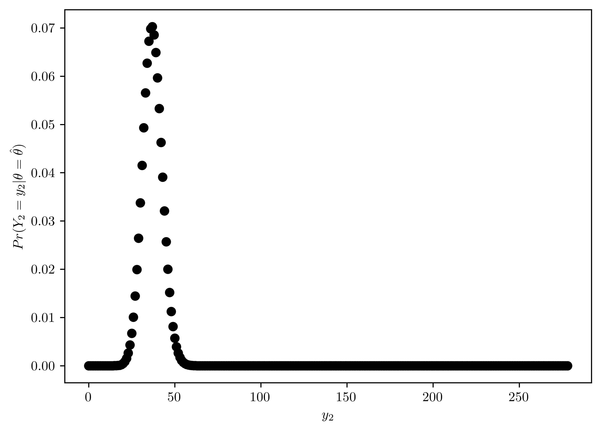
mean = np.sum(y2s*prs)
std = np.sqrt(np.sum(y2s*y2s*prs) - (np.sum(y2s*prs))**2)
pd.DataFrame({"mean": [np.sum(prs * y2s)/np.sum(prs)], "std": [std]})| mean | std | |
|---|---|---|
| 0 | 37.066667 | 5.667843 |
6.7 Problem 3.12
Jeffrey’s prior: Jeffreys (1961) suggested a default rule for gnerating a prior distribution of a parameter \(\theta\) in a sampling model \(p(y|\theta)\). Jeffreys’ prior is given by \(p_{J}\propto \sqrt{I(\theta)}\), where \(I(\theta) = - E[\frac{\partial^{2} \log p(Y|\theta)}{\partial\theta^2} | \theta]\) is the Fisher information.
6.7.1 (a)
Let \(Y\sim binomial(n,\theta)\). Obtain Jeffreys’ prior distribution \(p_J(\theta)\) for this model.
\(\because\) \(Y\sim binomial(n,\theta)\) \(\therefore\) \(E[Y]=n\theta\)
\[\begin{align} p(y|\theta) &= {n\choose y}\theta^{y}(1-\theta)^{n-y}\\ \log(p(y|\theta)) &= \log {n\choose y} + y\log \theta + (n-y)\log (1-\theta)\\ \frac{\partial \log(p(y|\theta))}{\partial \theta} &= \frac{y}{\theta} - \frac{n-y}{1-\theta}\\ \frac{\partial^2 \log(p(y|\theta))}{\partial^2 \theta} &= \frac{-y}{\theta^2} - \frac{n-y}{(1-\theta)^2}\\ E[\frac{\partial^2 \log(p(y|\theta))}{\partial^2 \theta} |\theta] &= -\frac{n\theta}{\theta^2} - \frac{n-n\theta}{(1-\theta)^2}\\ E[\frac{\partial^2 \log(p(y|\theta))}{\partial^2 \theta} |\theta] &= \frac{-n}{\theta} - \frac{n}{1-\theta}\\ - E[\frac{\partial^2 \log(p(y|\theta))}{\partial^2 \theta} |\theta] &= \frac{n}{\theta} + \frac{n}{1-\theta}\\ I(\theta) &= \frac{n}{\theta} + \frac{n}{1-\theta}\\ &= \frac{n}{\theta(1-\theta)}\\ \end{align}\]
\(\because\) \(p_J \propto \sqrt{I(\theta)}\)
\[\begin{align} p_J(\theta) \propto &\sqrt{I(\theta)}\\ &= \sqrt{\frac{n}{\theta(1-\theta)}}\\ \end{align}\]
Let \(c\) be the scalar. By the fact that \(\frac{d}{dx}(\sin^{-1}x)=\frac{1}{\sqrt{1-x^2}}\),
\[P_J (\theta) = c \times \sqrt{\frac{n}{\theta(1-\theta)}}\]
\[\begin{align} 1 &= c \int^{1}_{0} \sqrt{\frac{n}{\theta(1-\theta)}} d\theta\\ 1 &= nc \int^{1}_{0} \sqrt{\frac{1}{\theta(1-\theta)}} d\theta\\ 1 &= nc \left[ -2 \sin^{-1}(\sqrt{1-x}) \right]^{1}_{0} \\ 1 &= -2\times nc (\underbrace{\sin^{-1}(0)}_{=0} - \underbrace{\sin^{-1}(1)}_{=\frac{\pi}{2}})\\ 1 &= \pi n c \\ c &= \frac{1}{\pi n}\\ \end{align}\]
Thus,
\[p_J(\theta) = \frac{1}{\pi n} \sqrt{\frac{n}{\theta(1-\theta)}}\]
\[p_J(\theta) = \underline{\frac{1}{\pi \sqrt{n}}\frac{1}{\sqrt{\theta(1-\theta)}}} \tag{6.6}\]
6.7.2 (b)
Reparameterize the binomial sampling model with \(\psi = \log \theta / (1-\theta)\), so that \(p(y|\psi) = {n\choose y} e^{\psi y} (1+e^{\psi})^{-n}\). Obtain Jefferys’ prior distribution \(p_J (\psi)\) for this model.
\[\begin{align} p(y|\psi) &= {n\choose y} e^{\psi y} (1+e^{\psi})^{-n}\\ \log(p(y|\psi)) &= {n\choose y} + \psi y \underbrace{\log(e)}_{=1} - n\log(1+e^{\psi})\\ \log(p(y|\psi)) &= {n\choose y} + \psi y - n\log(1+e^{\psi})\\ \frac{\partial \log p(y|\psi)}{\partial \psi} &= y - n\frac{e^{\psi}}{1+e^{\psi}}\\ \frac{\partial^2 \log p(y|\psi)}{\partial^2 \psi} &= -n \frac{e^{\psi}}{(1+e^{\psi})^2}\\ E[ \frac{\partial^2 \log p(y|\psi)}{\partial^2 \psi} | \psi] &= -n \frac{e^{\psi}}{(1+e^{\psi})^2}\\ I(\psi) = -E[ \frac{\partial^2 \log p(y|\psi)}{\partial^2 \psi} | \psi] &= n \frac{e^{\psi}}{(1+e^{\psi})^2}\\ \end{align}\]
\(\therefore\) \(p_{J}(\psi) \propto \sqrt{I(\psi)} = \sqrt{\frac{n e^{\psi}}{(1+e^{\psi})^2}}\)
\[p_{J}(\psi) \propto \frac{\sqrt{n e^{\psi}}}{1+e^{\psi}}\]
6.7.3 (c)
Take the prior distribution from (a) and apply the change of variables formula from Exercise 3.10 to obtain the induced prior density on \(\psi\).
This density should be the same as the one derived in part (b) of this exercise. This consistency under reparameterization is the defining characteristic of Jeffrey’s’ prior.
\[\psi = g(\theta) = \log[\frac{\theta}{1-\theta}]\]
\[\theta = h(\psi) = \frac{e^{\psi}}{1+e^{\psi}}\]
From Equation 6.6, \(p_{\theta}(\theta) = \frac{1}{\pi \sqrt{n}}\frac{1}{\sqrt{\theta(1-\theta)}}\),
\[\begin{align} p_{\psi}(\psi) &= \frac{1}{\pi \sqrt{n}} p_{\theta}(h(\psi)) \times |\frac{dh}{d\psi}|\\ &= \frac{1}{\pi \sqrt{n}} \frac{1+e^{\psi}}{\sqrt{e^{\psi}(1+e^{\psi}-e^{\psi})}}\times \frac{e^{\psi}}{(1+e^{\psi})^2}\\ &= \frac{1}{\pi \sqrt{n}} \frac{1+e^{\psi}}{\sqrt{e^{\psi}}}\times \frac{e^{\psi}}{(1+e^{\psi})^2}\\ &= \frac{1}{\pi\sqrt{n}} \frac{\sqrt{e^{\psi}}}{1+e^{\psi}}\\ &\propto \frac{\sqrt{e^{\psi}}}{1+e^{\psi}}\\ &\propto p_{J}(\psi) \end{align}\]